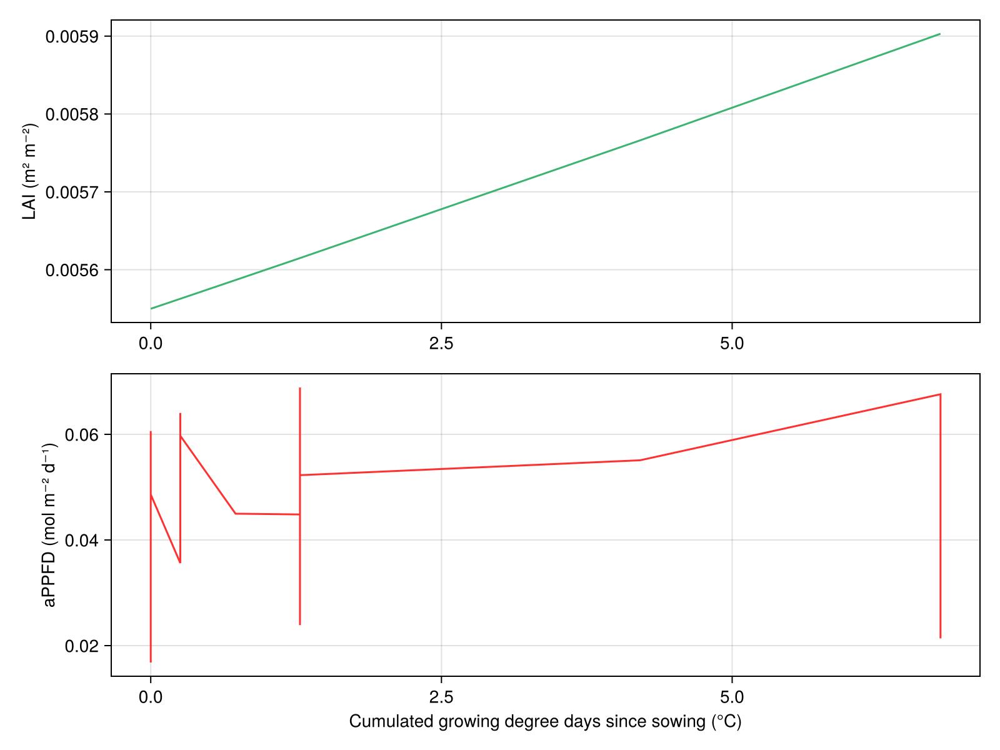

PlantSimEngine


Overview
PlantSimEngine is a Julia framework for building soil-plant-atmosphere simulations from small process models. A modeler writes reusable kernels with inputs_, outputs_, optional dependency traits, and run!. A simulation author then assembles those kernels on objects in a CompositeModel.
The public scenario API has one application-construction form:
ModelSpec(
model;
name=:application,
on=Many(scale=:Leaf),
inputs=(...),
calls=(...),
every=Dates.Hour(1),
environment=Environment(...),
output_routing=(...),
updates=Updates(...),
)Models And Applications
A model is a reusable implementation of a process. A model application is one configured use of that model in a model: it gives the use a name, selects its target objects, and configures its inputs, calls, timestep, and environment.
| Concept | Meaning |
|---|---|
| Process | The biological or physical operation, such as light interception |
| Model | An implementation of that process, such as Beer |
| Application | One configured use of a model in a CompositeModel |
| Target | An object on which that application executes |
One application can target many objects. The same model can also be used in several named applications with different parameters, selectors, or cadence. During compilation, PlantSimEngine resolves each application into its concrete (application, object) executions.
This means the same model can be reused on one object, many leaves, several plant species, a shared soil object, or a model-scale energy-balance solver without changing the model implementation.
Why PlantSimEngine?
- Modular models: each process model can be developed, tested, calibrated, and replaced independently.
- Explicit coupling:
ModelSpec(...; inputs=...)declares value dependencies, whilecalls=...gives iterative parent solvers manual control over hard model calls. - Object-based multiscale composite models: scales are labels on objects, so a plant can be described as plants, axes, internodes, leaves, roots, voxels, or any topology the model requires.
- Multirate execution: use
every=Dates.Hour(1)orevery=Dates.Day(1), with temporal policies such asIntegrate()orHoldLast()in the same model. - Automatic environment binding: global weather and spatial microclimate backends are bound through
Environment(...), modelenvironment_inputs_, and explicit accepted-state commits withcommit_environment!. - Performance-oriented internals: selectors and bindings are compiled before the timestep loop, same-rate inputs use references when possible, and homogeneous object batches are specialized.
- Generic values: status, model parameters, meteorology, and outputs can carry units, automatic-differentiation values, uncertainty wrappers, or other compatible Julia types.
Installation
To install the package, enter Julia package mode by pressing ] in the REPL, then run:
add PlantSimEngineUse it from Julia with:
using PlantSimEngineQuickstart: One CompositeModel Object
This example runs three existing toy models on one model object:
ToyDegreeDaysCumulModelcomputes daily thermal time.ToyLAIModelconsumes cumulative thermal time and computes LAI.Beerconsumes LAI and meteorology to compute absorbed PAR.
The model kernels are unchanged; the model application layer says where they run. Since no every is specified, these applications use the daily cadence of meteo_day.
using PlantSimEngine, PlantMeteo, Dates, DataFrames
using PlantSimEngine.Examples
meteo_day = read_weather(
joinpath(pkgdir(PlantSimEngine), "examples/meteo_day.csv");
duration=Dates.Day,
)
model = CompositeModel(
ToyDegreeDaysCumulModel(),
ToyLAIModel(),
Beer(0.6);
environment=meteo_day,
)
sim = run!(model; steps=30, outputs=:all)
out = collect_outputs(sim; sink=DataFrame)
first(out, 6)| Row | timestep | time | application_id | object_id | variable | value |
|---|---|---|---|---|---|---|
| Int64 | Float64 | Symbol | Symbol | Symbol | Float64 | |
| 1 | 1 | 1.0 | LAI_Dynamic | scene | LAI | 0.00554988 |
| 2 | 1 | 1.0 | Degreedays | scene | TT | 0.0 |
| 3 | 1 | 1.0 | Degreedays | scene | TT_cu | 0.0 |
| 4 | 1 | 1.0 | light_interception | scene | aPPFD | 0.0476221 |
| 5 | 2 | 2.0 | LAI_Dynamic | scene | LAI | 0.00554988 |
| 6 | 2 | 2.0 | Degreedays | scene | TT | 0.0 |
ToyLAIModel does not know where TT_cu comes from, and Beer does not know where LAI comes from. The compiler infers the unambiguous same-object bindings from each model's declared inputs and outputs:
select(
DataFrame(Diagnostics.explain_bindings(model)),
:application_id,
:input,
:source_application_ids,
:carrier_kind,
:copy_semantics,
)| Row | application_id | input | source_application_ids | carrier_kind | copy_semantics |
|---|---|---|---|---|---|
| Symbol | Symbol | Array… | Symbol | Symbol | |
| 1 | LAI_Dynamic | TT_cu | [:Degreedays] | ref | live_references |
| 2 | light_interception | LAI | [:LAI_Dynamic] | ref | live_references |
The outputs can be plotted like any other tabular result:
using CairoMakie
lai = out[out.variable .== :LAI, :value]
appfd = out[out.variable .== :aPPFD, :value]
tt_cu = out[out.variable .== :TT_cu, :value]
fig = Figure(resolution=(800, 600))
ax = Axis(fig[1, 1], ylabel="LAI (m² m⁻²)")
lines!(ax, tt_cu, lai, color=:mediumseagreen)
ax2 = Axis(fig[2, 1], xlabel="Cumulated growing degree days since sowing (°C)", ylabel="aPPFD (mol m⁻² d⁻¹)")
lines!(ax2, tt_cu, appfd, color=:firebrick1)
fig
Multi-Object Inputs
Use ModelSpec(...; inputs=...) when a model needs values from selected objects. Here the model-scale LAI model reads live references to all plant surfaces in the model:
plant_scene = CompositeModel(
Object(:scene; scale=:Scene, kind=:scene),
Object(:plant_1; scale=:Plant, kind=:plant, parent=:scene,
status=Status(surface=12.0)),
Object(:plant_2; scale=:Plant, kind=:plant, parent=:scene,
status=Status(surface=8.0));
applications=(
ModelSpec(ToyLAIfromLeafAreaModel(100.0); name=:scene_lai, on=One(scale=:Scene), inputs=(:plant_surfaces => Many(
scale=:Plant,
within=SceneScope(),
var=:surface,
),)),
),
)
plant_sim = run!(plant_scene)
scene_status = final_state(plant_sim, One(scale=:Scene))
scene_status(LAI = 0.2, total_surface = 20.0, plant_surfaces = RefVector{Float64}[12.0, 8.0])The same Many(...) selector would be plant-local if the consumer ran on a plant and used within=Subtree(). This is the same mechanism used for plant allocation models that sum their own leaves, model models that aggregate all plants, and microclimate solvers that select objects inside one environment cell.
When a selector reads a value produced by another model application, prefer application=... to identify the concrete producer. A process name describes the reusable scientific contract; an application name identifies the mounted producer in this scenario. This matters as soon as several applications implement the same process or publish the same variable on different objects.
Manual Calls For Iterative Solvers
Use ModelSpec(...; calls=...) when a parent model must directly run another model, for example a model energy-balance solver that iterates leaf temperatures until convergence:
ModelSpec(SceneEnergyBalance(); name=:scene_energy, on=One(scale=:Scene), calls=(:leaf_energy => Many(
kind=:plant,
scale=:Leaf,
within=SceneScope(),
application=:energy_balance,
),
:soil => One(
kind=:soil,
scale=:Soil,
within=SceneScope(),
application=:soil_water,
),), every=Hour(1))The same rule applies to manual calls: scenario wiring should select the concrete callee application with application=.... Model authors use process requirements in dep(model) when they declare generic dependencies, because they cannot know the application names that a user will choose later.
Inside run!, use run_call!(context, :leaf_energy) to execute every target and receive a vector-like collection. Pass sampled_environment=value to the same bulk call when the parent has already sampled one environment for all targets. Use call_model(context, :leaf_energy) when a singular call's concrete model must guide an iterative algorithm. Reserve call_targets and run_call!(target; publish=false) for selection, custom ordering, target status inspection, or different per-target environments. Publish the accepted state once, so temporal outputs and mutable environment writes are recorded exactly once.
Where To Go Next
- A mental model introduces the seven ideas used throughout the framework without configuration details.
- Couple models on one object is the first executable journey and runs a coupled simulation over many timesteps.
- Run the coupling on several objects introduces stable object identity and
Many. - Public API lists the composite-model/object constructors, selectors, lifecycle hooks, and explanation helpers.
- Model traits explains
inputs_,outputs_,dep,timespec,output_policy, andenvironment_inputs_. - Migration guide covers upgrades from earlier PlantSimEngine releases.
Performance
PlantSimEngine keeps model kernels close to regular Julia functions while the runtime handles dependency scheduling, object selection, temporal aggregation, and environment sampling. On an M1 MacBook Pro, toy daily simulations run in hundreds of microseconds, and PlantBiophysics.jl models using PlantSimEngine have been measured much faster than equivalent implementations in typical scientific scripting languages.
For performance-sensitive composite models, inspect the supported structured explanations:
Diagnostics.explain_bindings(model)
Diagnostics.explain_schedule(model)
Diagnostics.explain_execution_plan(model)These helpers expose resolved objects, carriers, copy/reference semantics, application clocks, and homogeneous execution batches.
Ask Questions
If you have questions or feedback, open an issue or ask on discourse.
Projects That Use PlantSimEngine
Make It Yours
PlantSimEngine is distributed under the MIT license. If you develop a package or model suite that uses it and want it listed here, please open a pull request or contact the maintainers.